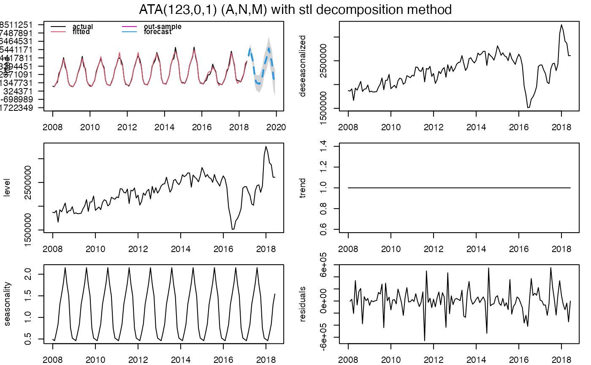

Returns ATA(p,q,phi)(E,T,S) applied to `ata` object.
Accuracy measures for a forecast model
Returns range of summary measures of the forecast accuracy. If out.sample is
provided, the function measures test set forecast accuracy.
If test_set is not provided, the function only produces
training set accuracy measures.
The measures calculated are:
lik : maximum likelihood functions
sigma : residual variance.
MAE : mean absolute error.
MSE : mean square error.
AMSE : Average MSE over first `nmse` forecast horizons.
RMSE : root mean squared error.
MPE : mean percentage error.
MAPE : mean absolute percentage error.
sMAPE : symmetric mean absolute percentage error.
MASE : mean absolute scaled error.
OWA : overall weighted average of MASE and sMAPE.
MdAE : median absolute error.
MdSE : median square error.
RMdSE : root median squared error.
MdPE : median percentage error.
MdAPE : median absolute percentage error.
sMdAPE : symmetric median absolute percentage error.
accuracy(object, ...) # S3 method for ata accuracy(object, out.sample = NULL, print.out = TRUE)
| object | An object of class |
|---|---|
| out.sample | A numeric vector or time series of class |
| print.out | Default is TRUE. If FALSE, summary of ATA Method's accuracy measures is not shown. |
Matrix giving forecast accuracy measures.
#'Hyndman RJ, Koehler AB (2006). “Another look at measures of forecast accuracy.” International Journal of Forecasting, 22(4), 679--688.
#'Hyndman RJ, Athanasopoulos G (2019). Forecasting: principles and practice. OTexts. https://otexts.com/fpp3/.
Ali Sabri Taylan and Hanife Taylan Selamlar
demoATA <- window(touristTR, start = 2008, end = 2018.417) ata.fit <- ATA(demoATA, h=18, seasonal.test = TRUE, seasonal.model = "stl")#> $sigma2 #> [1] 39748561992 #> #> $loglik #> [1] -1838.653 #> #> $AIC #> [1] 3691.305 #> #> $AICc #> [1] 3692.254 #> #> $BIC #> [1] 3711.159 #> #> $MSE #> [1] 37840631016 #> #> $MAE #> [1] 132241.3 #> #> $sMAPE #> [1] 4.981426 #> #> $MASE #> [1] 0.05142913 #> #> $OWA #> [1] NA #>#> ATA(123,0,1) (A,N,M) #> #> model.type: M #> #> seasonal.model: stl #> #> seasonal.type: M #> #> forecast horizon: 18 #> #> accuracy.type: sMAPE #> #> Model Fitting Measures: #> #> sigma2 loglik MAE #> 39748561991.74308014 -1838.65266837 132241.25150236 #> MSE RMSE MPE #> 37840631016.13940430 194526.68458630 0.03674943 #> MAPE sMAPE MASE #> 4.98722572 4.98142647 0.05142913 #> OWA #> NA #> #> In-Sample Accuracy Measures: #> #> MdAE MdSE RMdSE MdPE #> 71640.6732169 5132386058.9724503 71640.6732169 0.3403127 #> MdAPE sMdAPE #> 3.5598224 3.6243323 #> #> Out-Sample Accuracy Measures: #> #> MAE MSE RMSE MPE MAPE sMAPE MASE OWA #> NA NA NA NA NA NA NA NA #> #> Out-Sample Accuracy Measures: #> #> MdAE MdSE RMdSE MdPE MdAPE sMdAPE #> NA NA NA NA NA NA #> #> Information Criteria: #> #> AIC AICc BIC #> 3691.305 3692.254 3711.159 #> #> #> user system elapsed #> 3.303 0.294 3.604 #> #> calculation.time: 3.6041 #> #> #> Forecasts: #> Time Series: #> Start = 2018.50694444444 #> End = 2019.92361111111 #> Frequency = 12 #> [1] 4695683 5617714 4624226 3894132 1973838 1362923 1282392 1202103 1670181 #> [10] 2211902 3402691 4023909 4695683 5617714 4624226 3894132 1973838 1362923 #> #>#> $sigma2 #> [1] 39748561992 #> #> $loglik #> [1] -1838.653 #> #> $AIC #> [1] 3691.305 #> #> $AICc #> [1] 3692.254 #> #> $BIC #> [1] 3711.159 #> #> $MSE #> [1] 37840631016 #> #> $MAE #> [1] 132241.3 #> #> $sMAPE #> [1] 4.981426 #> #> $MASE #> [1] NA #> #> $OWA #> [1] NA #>